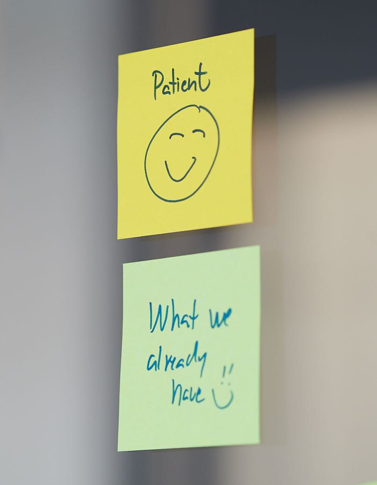

Our mission is to develop digital health products that bring research, care, and technology together with the ultimate goal of helping people live longer and better lives.
 Code to Save Lives
Code to Save Lives
 Dawn provides life-changing digital health therapies driving improved patient outcomes beyond the pill. We deliver strategic consulting and develop innovative digital health solutions in close collaboration with the pharmaceutical, medical device, and biotech industries.
Dawn provides life-changing digital health therapies driving improved patient outcomes beyond the pill. We deliver strategic consulting and develop innovative digital health solutions in close collaboration with the pharmaceutical, medical device, and biotech industries.
We envision a connected healthcare industry that efficienctly develops individualized treatments for patients and empowers practitioners to choose and manage the right treatments.
As an ISO13485:2016 certified developer of regulated digital health products, Dawn delivers value throughout the entire project lifecycle from concept and launch, to ongoing maintenance, support, and user acquisition.


 Want to do meaningful work? Join us!
Want to do meaningful work? Join us!

We are a passionate and dedicated mix of designers, engineers, regulatory and quality specialists and business consultants who want to make a difference in the lives of people living with diseases.
Working at Dawn Health is more than just a job. We are not just looking for new employees. We are looking for deeply passionate souls, gifted minds, innovators, team players, entrepreneurs and people who believe they can change the world. We love to build things, change the status quo and we drive a new digital health agenda that will impact 1 million patients by 2030.